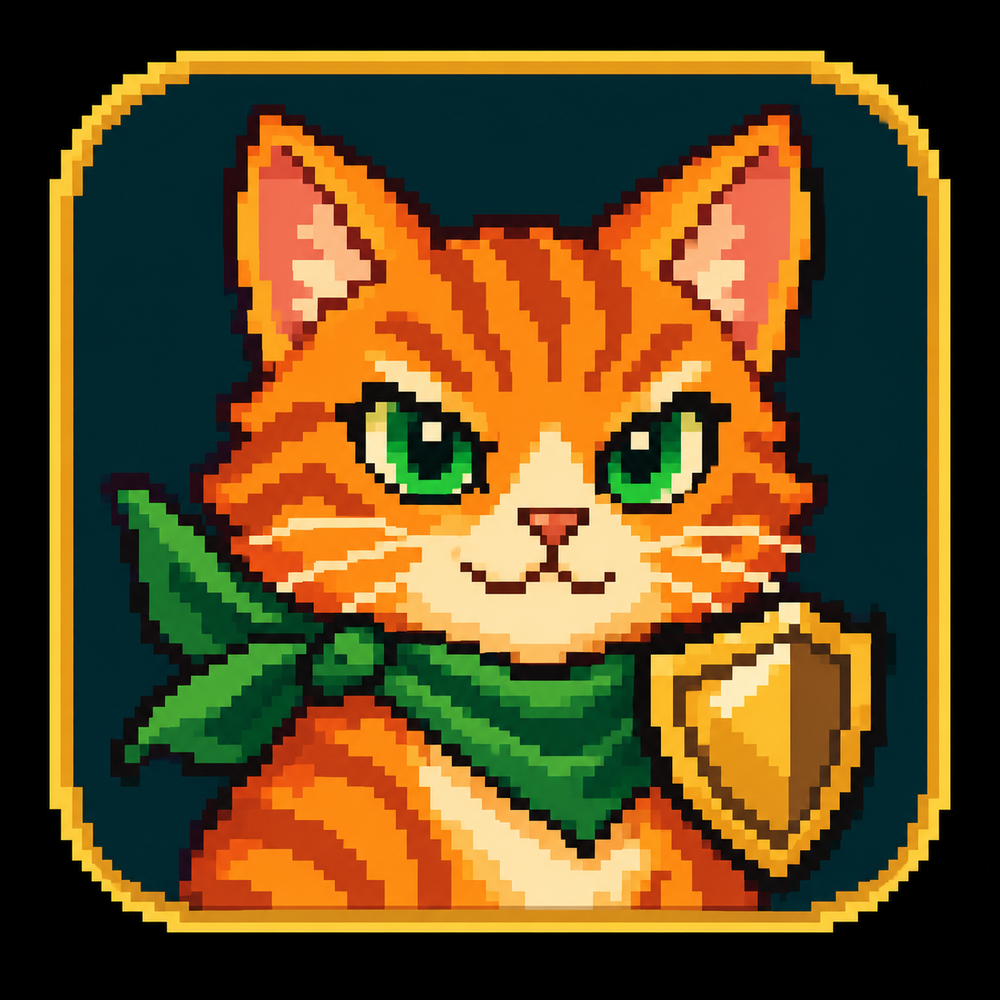

Browser play needs JavaScript. Enable it, or choose a desktop download from the homepage.
Your garden is getting ready.
Your garden plays in landscape.Pinch to zoom. Drag to explore.
Rotate your device sideways to continue.